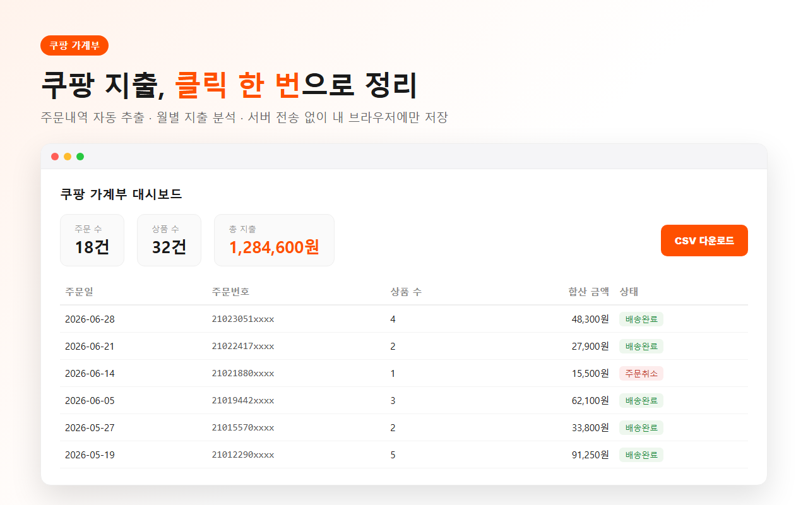

어느 날 문득 궁금해졌다. 나 쿠팡에서 1년에 도대체 얼마 쓰는 거지? 생수랑 휴지는 거의 정기구독처럼 사고, 옷도 사고, 가끔 가전도 사는데… 이게 다 합치면 얼마인지 감이 안 왔다.
마침 주문내역을 통째로 뽑는 확장을 만들어둔 게 있어서, 1년치를 한 번에 긁어봤다. 결과를 보고 잠깐 멍했다.

낱개로 볼 땐 "만 원짜리 뭐 하나 산 건데" 싶지만, 1년치를 합쳐서 총액으로 보면 이야기가 달라진다. 나는 생필품 반복구매가 생각보다 컸다. 티끌 모아 태산이라는 말이 소비에도 똑같이 적용된다.
가계부를 못 쓰는 이유는 게을러서가 아니라, 숫자를 모아서 보는 게 귀찮아서다. 그 귀찮음만 없애주면 소비는 알아서 정직해진다.
쿠팡은 주문내역 엑셀 다운로드를 안 준다. 그래서 페이지에 있는 주문 데이터를 대신 긁어오는 방식이 필요하다. 내가 쓴 방법은 이렇다.
1. 크롬 웹스토어에서 "쿠팡 가계부" 확장 설치 (회원가입 없음)
2. 쿠팡 주문목록 페이지에서 "내역 가져오기" 클릭 → 여러 페이지 자동 순회
3. 대시보드에서 총 지출·주문 수 확인, 필요하면 엑셀(CSV)로 저장
주문 데이터는 내 브라우저에만 저장되고 외부로 안 나간다. 지출 내역이라 이 부분은 확실히 해두고 싶었다.
| 보게 되는 것 | 예시 |
|---|---|
| 1년 총 지출 | 어… 이만큼 썼다고? |
| 월별 흐름 | 연말·연초에 쏠리는 소비 |
| 반복구매 품목 | 생수·휴지 같은 고정비의 정체 |
돈을 아끼자는 얘기는 아니다. 그냥 내가 어디에 쓰는지 아는 것만으로도 다음 달 소비가 조금 달라진다. 한 번쯤 자기 쿠팡 1년치 뽑아보는 거 추천한다.
#쿠팡1년지출 #쿠팡가계부 #쿠팡지출분석 #쿠팡얼마썼나 #쿠팡소비 #가계부 #쿠팡엑셀 #지출관리 #1인개발